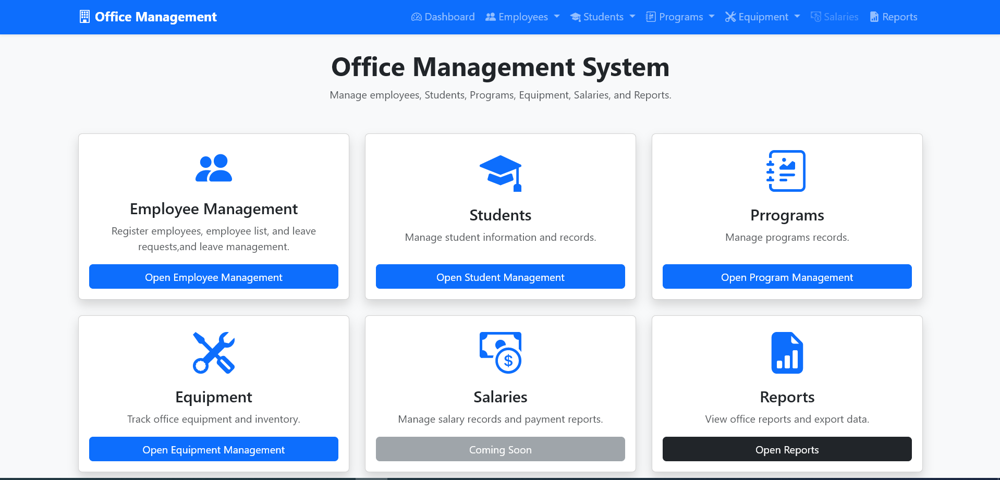
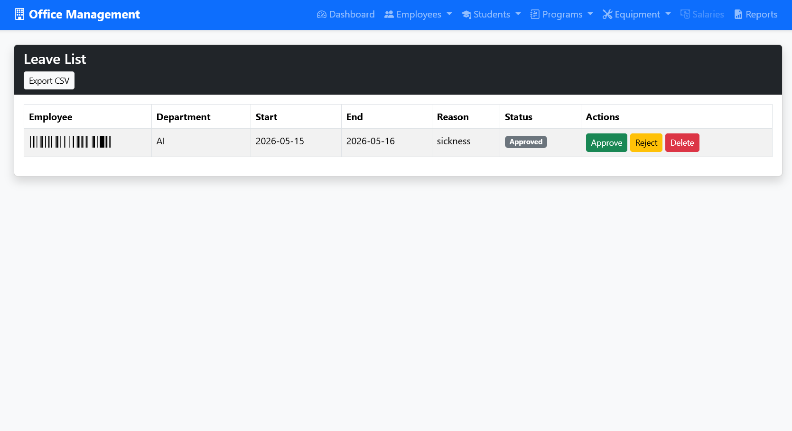
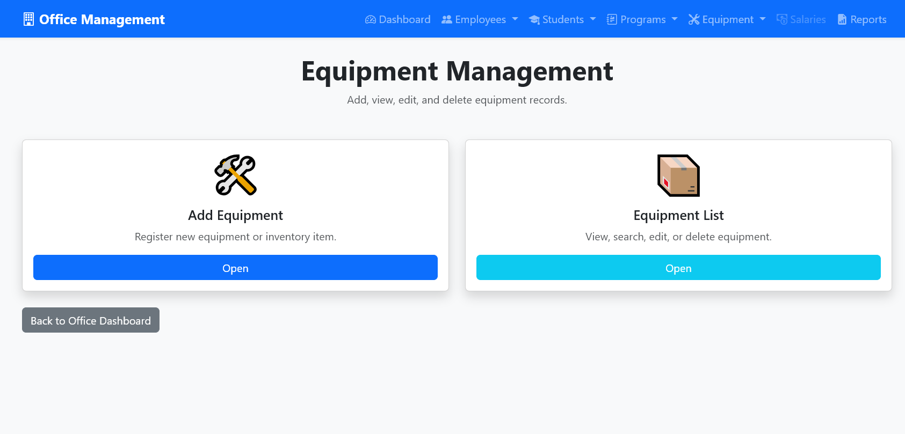

A web-based office management system developed with Python Flask, SQLite, HTML, Bootstrap, and Jinja templates. This system helps manage employees, students, programs, equipment, leave requests, absence requests, and reports from one centralized dashboard.
The dashboard is the main entry point of the system. It provides quick access to Employee Management, Student Management, Program Management, Equipment Management, Salaries, and Reports. Each card links to a separate module, making the system easy to navigate.

The Employee Management module allows the office administrator to register employees, manage employee records, submit leave requests, view leave lists, and access employee lists. It keeps employee information organized and supports office HR operations.

The Leave List page displays employee leave requests with employee name, department, start date, end date, reason, status, and action buttons. The administrator can approve, reject, or delete leave requests. The system also supports CSV export for reporting.

The Student Management module is designed to manage student records, student registration, student lists, absence requests, and absence approvals. It also supports uploading student photos and educational documents.

The Student Absence List allows administrators to review student absence requests. Each request includes student information, email, course, start and end dates, reason, status, and action buttons. Administrators can approve, reject, or delete student absence requests.

The Program Management module allows administrators to create and manage school programs or courses. It includes options to add a new program and view the program list. Program records can be searched, edited, and deleted through the system.

The Equipment Management module is used to manage office inventory and equipment records. Administrators can add new equipment, view equipment lists, update equipment details, track quantity, record purchase dates, and manage equipment status.

The Reports section provides summary information about employees and leave requests. It helps administrators review office activity and export useful data such as employee reports and leave reports in CSV format.
The Salaries section is planned as a future feature. It can be extended to manage employee salary records, payment history, and salary reports.